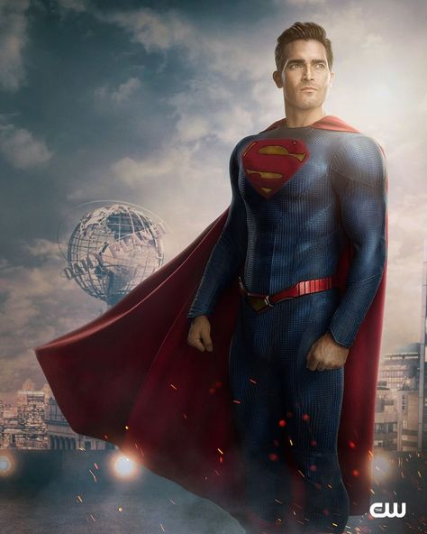
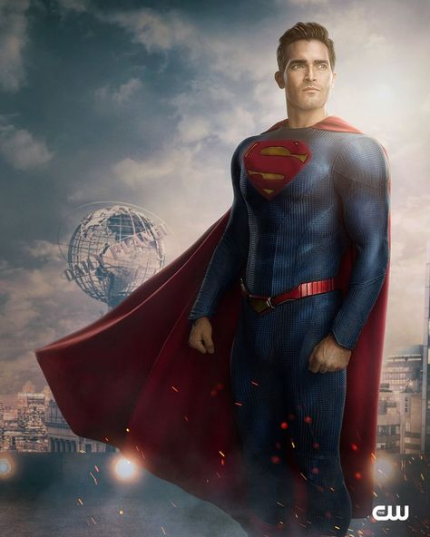

Hero 1: Superman
Superman, born on the planet Krypton as Kal-El, is one of the most famous superheroes. Known for his super strength, speed, and the ability to fly, he is an emblem of hope and justice.
Superman, born on the planet Krypton as Kal-El, is one of the most famous superheroes. Known for his super strength, speed, and the ability to fly, he is an emblem of hope and justice.
Wonder Woman, also known as Diana Prince, is a warrior princess from the Amazonian island of Themyscira. She fights for peace and equality, armed with her Lasso of Truth and indestructible bracelets.

Spider-Man, or Peter Parker, is a young superhero who gains spider-like abilities after being bitten by a radioactive spider. He fights crime in New York City while balancing his personal life.

Iron Man, Tony Stark, is a genius inventor and billionaire who builds a powerful suit of armor to save the world. His wit, intelligence, and determination make him one of the Avengers' greatest heroes.

Captain America, or Steve Rogers, was enhanced to the peak of human physicality through the Super Soldier Serum. He is known for his leadership, unbreakable shield, and dedication to justice.